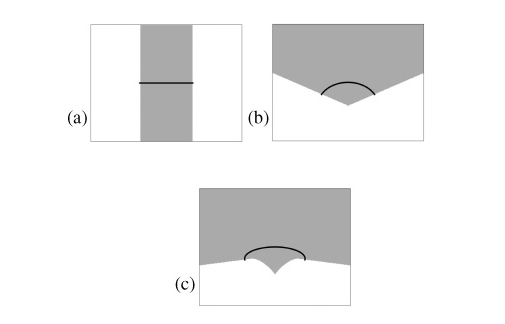
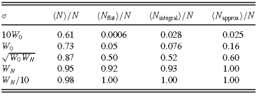
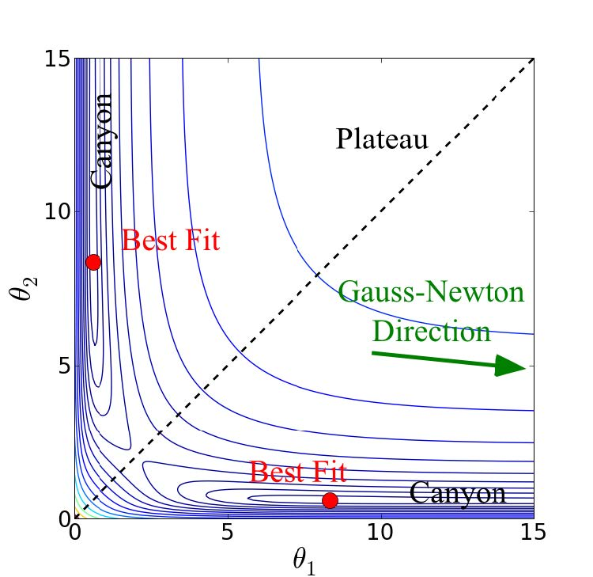
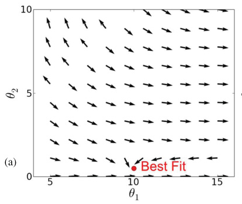
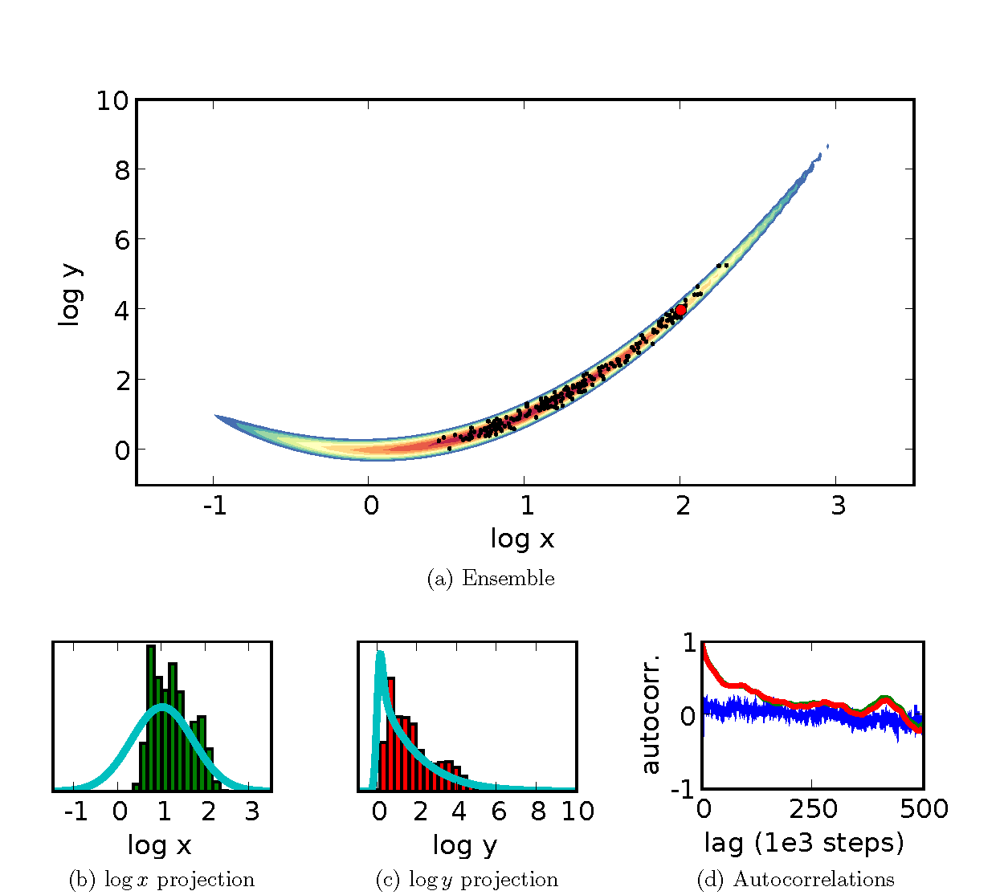
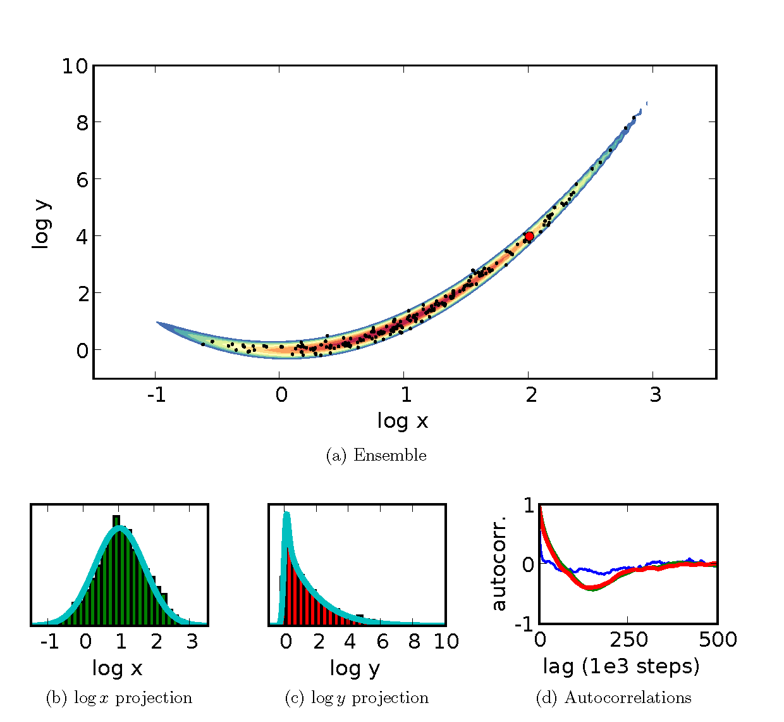
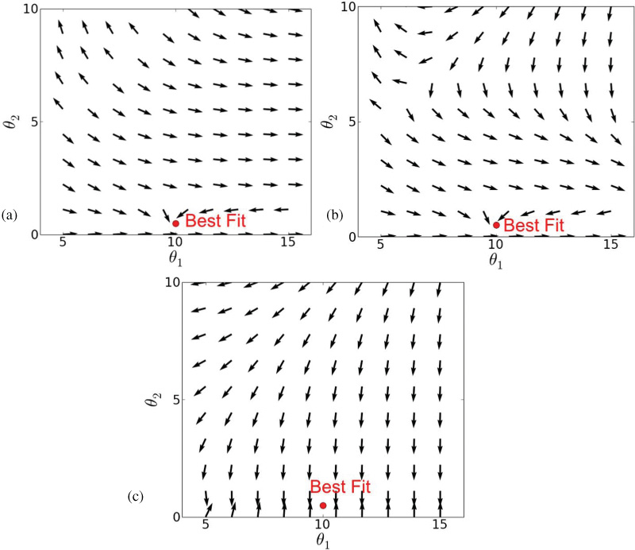
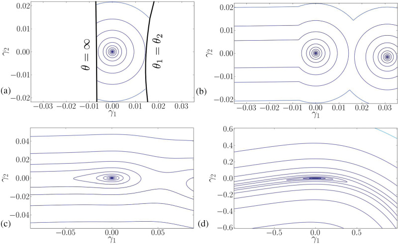
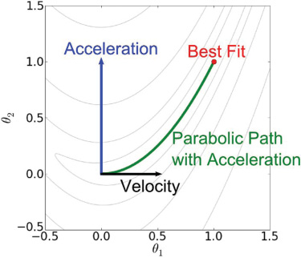
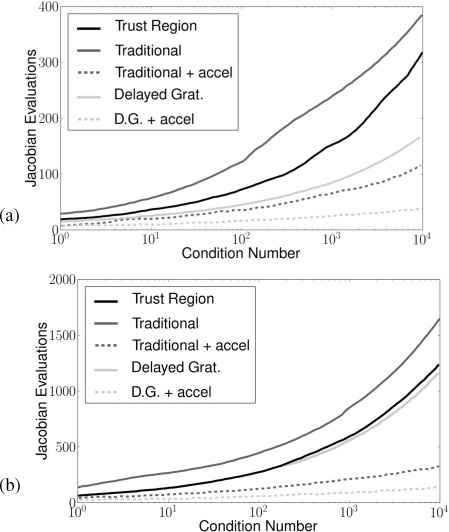

Numerical Methods motivated by Information Geometry
Relative Off-Set Orthogonality
Context: Iterative optimization algorithms.
Problem: What is a good stopping criterion?
Problem: What is a good stopping criterion?
Previous Criterion:
- Objective function stops decreasing (absolute/relative)
- Gradient is small
- Too many function evaluations
- Parameters stop changing (absolute/relative)
- Residual $\perp$ gradient vectors
Key Concept: Stopping criterion vs. Convergence criterion
Bates, Douglas M., and Donald G. Watts. "A Relative Off set Orthogonality Convergence Criterion for Nonlinear least Squares." Technometrics 23.2 (1981): 179-183.
Residual Angle
- Confidence Regions correspond (approximately) to disks on the model manifold.
- The angle between the residual vector and the best fit residual vector is a scale free indication of how near the best fit the algorithm is.
- Stop the algorithm when the $\cos$ of the angle is small (~0.001)
Advantages:
The relative-offset orthogonality criterion has a number of advantages over other methods.
- An absolute measure of convergence
- Independent of scaling in the data
- Independent of parameterizations (parameter-effects nonlinaerities)
- Relates directly to statistical quality of the best fit
Problems
There are two important cases in which this method will fail.
- When the best fit residual is zero
- When the best fit is on a boundary
The first can happen frequenty for optimization problems that are not fitting random data.
The second can happen frequently when fitting sloppy models.
Best Fit at the Boundary?
If a manifold has many narrow widths, then the noise in the data can push the best fit to the boundary.
The probability of this happening depends on several factors:


The probability of this happening depends on several factors:
- Distribution of Manifold Widths
- Curvature along cross-sections
- Scale of noise
Modified Convergence Criterion
- At a regular point of the manifold, the tangent plane is defined by the columns of the Jacobian matrix: $J_{m\mu} = \partial_\mu y_m(\theta)$.
- The relevant quantity is the projection operator onto the tangent plane: $$ P^T = J \left( J^T J \right)^{-1} J^T = U U^T$$ where $U$ are the left singular vectors of $J = U \Sigma V^T$
- At a manifold boundary, the tangent plane is not well-defined, but it is for the submanifold defined by the boundary. $$ \tilde{P}^T = \tilde{U} \tilde{U}^T $$ where $U$ are singular vectors with singular values above some tolerance.
Transtrum, Mark K., and James P. Sethna. "Improvements to the Levenberg-Marquardt algorithm for nonlinear least-squares minimization." arXiv preprint arXiv:1201.5885 (2012).
Natural Gradient
Context: Iterative optimization algorithms.
Problem: Slow convergence; Plateau problem.
Problem: Slow convergence; Plateau problem.
Many cost surfaces have a common structure:
- Near the best fit, narrow canyons long aspect ratio (given by square root of ratio of eigenvalues)
- Farther from the best fit, the cost function plateaus. (Imagine finding the hole in a golf course using only local information.)
Amari, Shun-Ichi. "Natural gradient works efficiently in learning." Neural computation 10.2 (1998): 251-276.
Stepping toward the minimum
- (negative) Gradient: Direction of steepest descent (in parameter space): $$ dx = - \tau \nabla C$$ The parameter $\tau$ is tuned by the algorithm control step size.
- The gradient direction is famously bad:
- Oscillations in the bottom of the canyon (conjugate gradient)
- (negative) Natural Gradient: Direction of steepest descent in data space (in parameter space) $$ dx = - \tau g^{-1} \nabla C$$
- For least squares equivalent to Gauss-Newton
- Fisher Efficient (technical) $\implies$ could remove the plateau problem.
Extended Geodesic Coordinates Removes Plateaus

Transtrum, Mark K., Benjamin B. Machta, and James P. Sethna. "Geometry of nonlinear least squares with applications to sloppy models and optimization." Physical Review E 83.3 (2011): 036701.
Natural Gradient and Boundaries

The natural gradient direction is very likely to encounter a boundary before finding the best fit.
Riemannian MCMC
Context: Markov Chain Monte Carlo Sampling of Bayesian Posterior Distributions.
Problem: Slow convergence
Problem: Slow convergence
- Random walk through parameter space weighted by the cost
- Extreme aspect ratios
- Preferentially step in the sloppy directions
- Gaussian steps with correlations given by FIM.
- Modified acceptance criterion (Detailed Balance, see Numerical Recipes)
Girolami, Mark, and Ben Calderhead. "Riemann manifold langevin and hamiltonian monte carlo methods." Journal of the Royal Statistical Society: Series B (Statistical Methodology) 73.2 (2011): 123-214.
Gutenkunst, Ryan Nicholas. Sloppiness, modeling, and evolution in biochemical networks. Diss. Cornell University, 2008.
Gutenkunst, Ryan Nicholas. Sloppiness, modeling, and evolution in biochemical networks. Diss. Cornell University, 2008.
Some Results
 Computational Tradeoffs
- Riemannian MCMC is much more efficient in terms of steps.
- Each Riemannian MCMC step is much more computationally intensive.
- In practice, it appears to be effective.
- Other MCMC methods are also effective (e.g., https://arxiv.org/abs/1202.3665)
Levenberg-Marquardt
Context: Data Fitting
Problem: Slow convergence, getting lost on the plateau
Problem: Slow convergence, getting lost on the plateau
- The Natural gradient is preferred near the best fit
- Far from the best fit, the natural gradient becomes stuck at the boundary
- Not originally motivated by information geometry.
- Information geometry helps explain why it is effective
Transtrum, Mark K., Benjamin B. Machta, and James P. Sethna. "Geometry of nonlinear least squares with applications to sloppy models and optimization." Physical Review E 83.3 (2011): 036701.
Original Derivation: Trust Region
Approximate the cost near the current guess:
$$ C(\theta) = \frac{1}{2} \sum_m r_m(\theta)^2 \approx \frac{1}{2} \sum_m \left( r_{m0} + J_{m\mu} (\theta^\mu - \theta^\mu_0\right)^2 $$
Minimize the approximate $C(\theta)$ subject to the constraint:
$$ \delta \theta^T \left( D^T D \right) \theta < \Delta $$
Leads to the step:
$$ \delta \theta = -\left(J^T J + \lambda D^T D\right)^{-1} \nabla C $$
where $\lambda$ is a Lagrange Multiplier (damping parameter).
$D^TD$ is usually taken to be the identity.
$D^TD$ is usually taken to be the identity.
Understanding LM
Large $\lambda$:
$$ \delta \theta \rightarrow -\frac{1}{\lambda} \left( D^TD \right)^{-1} \nabla C $$
Small $\lambda$: $$ \delta \theta \rightarrow -\left( J^TJ \right)^{-1} \nabla C $$
- Steps become arbitrarily small
- Directed in the parameter space gradient
- For sufficiently large $\lambda$, there will always be a step that moves downhill
Small $\lambda$: $$ \delta \theta \rightarrow -\left( J^TJ \right)^{-1} \nabla C $$
- Steps become the Natural Gradient
Understanding LM
A typical optimization procedure:
- Far from best fit, large $\lambda$
- Algorithm moves downhill into a canyon and near the best fit.
- $\lambda$ is slowly decreased, rotating the step in the natural gradient
- Rapid convergence near the best fit
Model Graph
- The term $J^TJ + \lambda D^TD$ looks like a modified metric.
- It is the metric on the model graph
- Plot model output against parameters
- $N$ dimensional manifold embedded in an $M+N$ dimensional space
- The model graph stretches the model manifold so that there are no more boundaries.
Transtrum, Mark K., Benjamin B. Machta, and James P. Sethna. "Geometry of nonlinear least squares with applications to sloppy models and optimization." Physical Review E 83.3 (2011): 036701.
Natural Gradient of Model Graph

Transtrum, Mark K., Benjamin B. Machta, and James P. Sethna. "Geometry of nonlinear least squares with applications to sloppy models and optimization." Physical Review E 83.3 (2011): 036701.
Geodesic Coordinates on Model Graph

Transtrum, Mark K., Benjamin B. Machta, and James P. Sethna. "Geometry of nonlinear least squares with applications to sloppy models and optimization." Physical Review E 83.3 (2011): 036701.
Geodesic Levenberg-Marquardt
Context: Data Fitting
Problem: Slow convergence, getting lost on the plateau
Problem: Slow convergence, getting lost on the plateau
- Levenberg-Marquardt is generally effective, but can become slow when the canyon is narrow and curves.
- Geodesic coordinates suggest a way of straightening out the canyon.
- Sometimes $\lambda$ is decreased too quickly, LM becomes lost.
Transtrum, Mark K., Benjamin B. Machta, and James P. Sethna. "Why are nonlinear fits to data so challenging?." Physical review letters 104.6 (2010): 060201.
Optimziation and Geometry
- A recurring theme: Algorithms should exploit the natural geometric structure of the problem.
- Rather than stepping in straight lines in parameter space, take straight lines in data space: Geodesics $$ \delta \theta = v \tau + \frac{1}{2} a \tau^2 + \dots $$
- The first order term is the traditional LM step.
- The second order term is the geodesic acceleration on the model graph: $$ \frac{1}{2}a \tau^2 = \frac{1}{2} \left( J^TJ + \lambda D^TD \right)^{-1} J^T \left( v^\mu v^\nu \partial_\mu \partial_\nu \mathbf{y} \right)$$
Geodesic Acceleration

Transtrum, Mark K., Benjamin B. Machta, and James P. Sethna. "Geometry of nonlinear least squares with applications to sloppy models and optimization." Physical Review E 83.3 (2011): 036701.
Comparing Algorithms
- Derivatives are generally expensive to calculate.
- Each Jacobian is equal to roughly $N$ function evaluations.
- For large models, calculating Jacobian is the botleneck.
- Calculating all second derivatives would be $N^2$ function evaluations.
- The geodesic acceleration requires a direction second derivative, estimable with 1 extra function evaluation.
- Comparison Strategy:
- Test on small problems
- Count number of Jacobian Evaluations
- Extrapolate performance to large problems where Jacobian evaluations dominate.
Results

Transtrum, Mark K., Benjamin B. Machta, and James P. Sethna. "Geometry of nonlinear least squares with applications to sloppy models and optimization." Physical Review E 83.3 (2011): 036701.
Improving the trust region
Levenberg-Marquardt adjusts $\lambda$ by gauging the cost at the proposed step.
Geodesic Acceleration suggests an additional check:
In practice, geodesic acceleration is much more adept at avoiding manifold boundaries with this criterion.
- If $C_{new} < C$, decrease $\lambda$ and accept step
- If $C_{new} > C$, increase $\lambda$ and reject step
- Generally effective, but not always.
Geodesic Acceleration suggests an additional check:
- Only accept steps if $|a| < |v|$
In practice, geodesic acceleration is much more adept at avoiding manifold boundaries with this criterion.